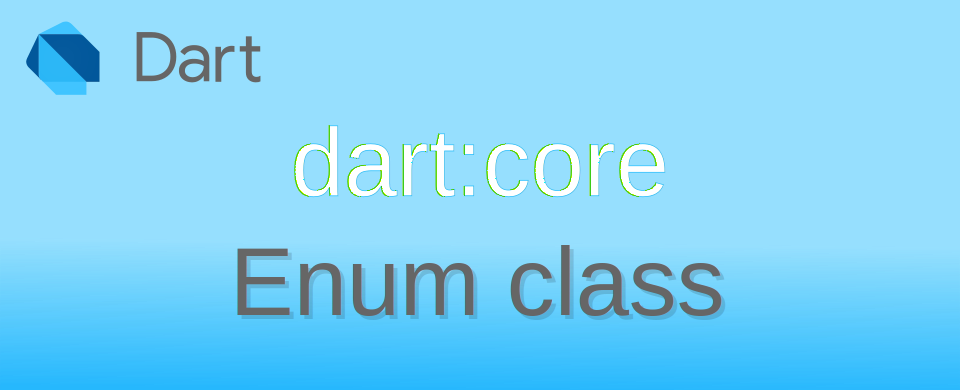

Dart: การใช้งาน Enumerated types เบื้องต้น

Enum class เป็นข้อมูลที่ผู้ใช้งานกำหนดชื่อของลำดับตัวเลขขึ้นมา แทนที่จะใช้ String ตรง ๆ มันมีประสิทธิภาพและช่วยให้โปรแกรมอ่านง่ายขึ้น ข้อมูล enums เป็นที่นิยมใช้งานกันในหลายภาษาโปรแกรม
การใช้งานหลัก ๆ ของ enum เป็นการกำหนด choices สำหรับเลือกสิ่งที่ต้องการจากคำตอบจากสมาชิกทั้งหมด แล้วส่งผ่าน parameter ในฟังก์ชั่นเพื่อสื่อสารกันในโปรแกรม
การสร้าง Enum และใช้งาน Enum
ทำเหมือนการประกาศ class แต่ตัว enum จะมีเฉพาะการประกาศชื่อที่จะใช้แทน index แต่ละตัวเท่านั้น ในการใช้งานตัว enum เป็นเหมือน static variable แบบหนึ่ง สามารถอ้างถึงด้วยชื่อของ enum ได้เลย
การตั้งชื่อสมาชิกใน enum จะใช้หลักการเดียวกับการตั้งชื่อตัวแปรแบบ lowerCamelCase
enum MyColor { red, green, blue }
void main() {
print(MyColor.red); // output → MyColor.red
print(MyColor.red.index); // output → 0
print(MyColor.green); // output → MyColor.green
print(MyColor.green.index); // output → 1
print(MyColor.blue); // output → MyColor.blue
print(MyColor.blue.index); // output → 2
}
การใช้งาน Enum จะมองว่าตัวสมาชิกที่กำหนดขึ้นมาใช้อ้างอิงและเปรียบเทียบกันได้
enum MyColor { red, green, blue }
void main() {
var color1 = MyColor.red;
switch (color1) {
case MyColor.red:
print('color1 is red');
case MyColor.green:
print('color1 is green');
case MyColor.blue:
print('color1 is blue');
default:
}
}
ผลที่ได้
color1 is red
ในตัว enum ยังมีคำสั่งต่าง ๆ ที่มีประโยชน์ในการเข้าถึงและใช้งานสมาชิกแต่ละตัวได้
การเข้าถึง List ของสมาชิกใน Enum
สมาชิกของ enum สามารถใช้คำสั่ง .values เพื่อเข้าถึง List ของสมาชิกทั้งหมดของ enum ได้เลย
enum MyColor { red, green, blue }
void main() {
List<MyColor> colorList = MyColor.values;
print(colorList.length); // output → 3
colorList.forEach(print); // output →
// MyColor.red
// MyColor.green
// MyColor.blue
MyColor color1 = colorList.first;
print(color1); // output → MyColor.red
print(color1.index); // output → 0
print(color1.name); // output → red
print(color1.name.toUpperCase()); // output → RED
}
การเข้าถึง index
ทุกสมาชิกของ enum จะมีเลข index ที่ไม่ซ้ำกัน เริ่มต้นที่ 0 สามารถอ่านค่าดังกล่าวด้วยคำสั่ง .index จะได้ค่า int กลับมา
enum MyColor { red, green, blue }
void main() {
print(MyColor.red.index); // output → 0
print(MyColor.green.index); // output → 1
print(MyColor.blue.index); // output → 2
}
การเข้าถึง name
ทุกสมาชิกของ enum จะมีคำสั่ง .name ที่คืนค่าเป็น String ชื่อของสมาชิกเอง
enum MyColor { red, green, blue }
void main() {
MyColor color1 = MyColor.red;
print(color1); // output → MyColor.red
print(color1.name); // output → red
print(color1.name.toUpperCase()); // output → RED
print("color1 is ${color1.name}"); // output → color1 is red
}
การเปรียบเทียบระหว่างสมาชิก ด้วย static method
การเปรียบเทียบสมาชิก enum ด้วย static method สามารถทำได้ 2 แบบ คือ
- เปรียบเทียบตาม index ด้วย
Enum.compareByIndex - เปรียบเทียบตามชื่อด้วย
Enum.compareByName
เปรียบเทียบตามค่า index
Enum.compareByIndex จะเป็นการเปรียบเทียบสมาชิกของ enum โดยการเอาค่า index มาลบกัน คืนผลต่างที่ได้
- a > b ผลที่ได้ มากกว่า 0
- a == b ผลที่ได้ 0
- a < b ผลที่ได้ น้อยกว่า 0
enum MyColor { red, green, blue }
void main() {
MyColor colorRed = MyColor.red;
MyColor colorBlue = MyColor.blue;
print(colorRed.index - colorBlue.index); // output → -2
print(colorRed.index > colorBlue.index); // output → false
print(Enum.compareByIndex(colorRed, colorBlue)); // output → -2
}
จากตัวอย่าง ผู้ใช้สามารถเลือกได้ว่าจะเอา index มาลบกันด้วยตัวเอง หรือทำผ่าน Enum.compareByIndex ซึ่งมีผลในการทำความเข้าใจว่าโปรแกรมกำลังทำอะไร
เปรียบเทียบตามค่า name
Enum.compareByName จะเปรียบเทียบสมาชิกตามชื่อแทน โดยจะเปรียบเทียบแบบ case sensitive การทำงานไม่ต่างจาก String.compareTo()
- a > b ผลที่ได้ มากกว่า 0
- a == b ผลที่ได้ 0
- a < b ผลที่ได้ น้อยกว่า 0
enum MyColor { red, green, blue }
void main() {
MyColor colorRed = MyColor.red;
MyColor colorBlue = MyColor.blue;
print(Enum.compareByName(colorRed, colorBlue)); // output → 1
print(colorRed.name.compareTo(colorBlue.name)); // output → 1
}
ประโยชน์อีกข้อคือ หากต้องการสร้าง List ของสมาชิก enum ที่ให้เรียงตามชื่อ name แทน สามารถใช้ .sort() เพื่อการเรียงลำดับได้
enum MyColor { red, green, blue }
void main() {
List<MyColor> colors = [...MyColor.values];
print(colors); // output → [MyColor.red, MyColor.green, MyColor.blue]
// sort by name of enum member
colors.sort(Enum.compareByName);
print(colors); // output → [MyColor.blue, MyColor.green, MyColor.red]
// use .. operator when create list
List<MyColor> colorAtoZ = [...MyColor.values]..sort(Enum.compareByName);
print(colorAtoZ); // output → [MyColor.blue, MyColor.green, MyColor.red]
}
การใช้ index เพื่ออ่านค่าสมาชิกใน Enum
ตัว Enum จะเก็บลำดับสมาชิกเป็น index ค่าเริ่มต้นที่ 0 หากต้องการใช้ค่า index เพื่อดึงค่าสมาชิกกลับมา สามารถทำได้โดยผ่าน .values[index]
enum SimpleAnimal { cat, bat, rat }
void main() {
print(SimpleAnimal.values.length); // output → 3
print(SimpleAnimal.values[0]); // output → SimpleAnimal.cat
print(SimpleAnimal.values[1]); // output → SimpleAnimal.bat
print(SimpleAnimal.values[2]); // output → SimpleAnimal.rat
print(SimpleAnimal.values[3]); // RangeError (index): Invalid value: Not in inclusive range 0..2: 3
}
การแปลง String เป็น Enum
เนื่องจากตัว Enum มีการเก็บชื่อของสมาชิกเป็น String เอาไว้ด้วย ดังนั้นจึงเป็นเรื่องไม่อยากที่จะเอาข้อความ String มาแปลงกลับเป็น Enum
enum SimpleAnimal { cat, bat, rat }
void main() {
String myRat = "rat";
try {
SimpleAnimal result = SimpleAnimal.values.firstWhere((element) => element.name.compareTo(myRat) == 0);
print(result); // output → SimpleAnimal.rat
} catch (e) {
print('Can not conver "$myRat" to SimpleAnimal'); // no output
}
String myAnt = "ant";
try {
SimpleAnimal result = SimpleAnimal.values.firstWhere((element) => element.name.compareTo(myAnt) == 0);
print(result); // no output
} catch (e) {
print('Can not conver "$myAnt" to SimpleAnimal'); // → Can not conver "ant" to SimpleAnimal
}
}
ผลที่ได้
SimpleAnimal.rat
Can not conver "ant" to SimpleAnimal
ในตัวอย่าง จะเป็นการเปรียบเทียบค่าใน List ของ Enum ว่ามีสมาชิกตัวไหนที่ .name มีค่าเท่ากับ String ที่สนใจ โดยผ่านคำสั่ง .firstWhere() หากไม่พบสมาชิกที่ตรงกับใน enum ก็จะแสดงข้อความแจ้งให้ทราบ
การสร้าง Enhanced enums
ใน Dart ตั้งแต่ 2.17 ขึ้นไป จะสามารถสร้าง enhanced enumsได้ วิธีการสร้างก็คล้าย ๆ กับการประกาศ class แต่มีจุดที่ไม่เหมือนกันคือ Instance ที่ได้จากการสร้างจะเป็น final และ ตัว constructor ต้องเป็น constant ส่วนรายละเอียดอื่น ๆ อ่านได้จาก Declaring enhanced enum
ตัวอย่างสร้าง MyColor ที่เป็น enum เพื่อเก็บค่าสี RGB
enum MyColor {
red(r: 255, g: 0, b: 0),
green(r: 0, g: 255, b: 0),
blue(r: 0, g: 0, b: 255);
final int r, g, b;
const MyColor({required this.r, required this.g, required this.b});
}
void main() {
var blueColor = MyColor.blue;
print(blueColor); // output → MyColor.blue
print(blueColor.r); // output → 0
print(blueColor.g); // output → 0
print(blueColor.b); // output → 255
print(MyColor.red.r); // output → 255
print(MyColor.red.g); // output → 0
print(MyColor.red.b); // output → 0
print(MyColor.green.r); // output → 0
print(MyColor.green.g); // output → 255
print(MyColor.green.b); // output → 0
}
จากตัวอย่าง ใน enum ประกาศ MyColor() constructor มีสมาชิกเป็น r g b เมื่อเรียกคำสั่ง MyColor.blue ก็จะเหมือนไปเรียก MyColor(r: 0, g: 0, b: 255)
เนื่องจากมันทำงานคล้ายกับการประกาศ class มันจึงสามารถ implement และใส่ method เข้าไปได้ด้วย มาลองใส่การแปลงค่าสี RGB เป็น Web Color กันดู
enum MyColor {
red(r: 255, g: 0, b: 0),
green(r: 0, g: 255, b: 0),
blue(r: 0, g: 0, b: 255);
final int r, g, b;
const MyColor({required this.r, required this.g, required this.b});
String get webColorCode {
String rHex = r.toRadixString(16).padLeft(2, '0');
String gHex = g.toRadixString(16).padLeft(2, '0');
String bHex = b.toRadixString(16).padLeft(2, '0');
return "#$rHex$gHex$bHex";
}
}
void main() {
var blueColor = MyColor.blue;
print(blueColor.webColorCode); // output → #0000ff
print(MyColor.blue.webColorCode); // output → #0000ff
print(MyColor.red.webColorCode); // output → #ff0000
}
ลอง implement ด้วย Comparable<T> เพื่อให้สามารถใช้คำสั่ง compareTo() ได้ ในการเปรียบเทียบจะใช้วิธีแปลงค่า RGB เป็นเลขจำนวนเต็ม แล้วค่าผลลัพธ์ที่ได้ของทั้ง 2 ตัว เอามาลบกัน
enum MyColor implements Comparable<MyColor> {
red(r: 255, g: 0, b: 0),
green(r: 0, g: 255, b: 0),
blue(r: 0, g: 0, b: 255);
final int r, g, b;
const MyColor({required this.r, required this.g, required this.b});
@override
int compareTo(MyColor other) {
int colorThis = (r * 65536) + (g * 256) + b;
int colorOther = (other.r * 65536) + (other.g * 256) + other.b;
return colorThis - colorOther;
}
}
void main() {
var blueColor = MyColor.blue;
var redColor = MyColor.red;
print(redColor.compareTo(blueColor)); // output → 16711425
print(redColor.compareTo(MyColor.red)); // output → 0
// sort MyColor list
List<MyColor> colors = [MyColor.green, MyColor.red, MyColor.blue];
colors.sort();
print(colors); // output → [MyColor.blue, MyColor.green, MyColor.red]
}